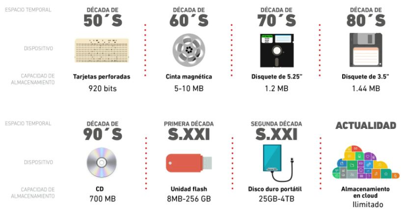
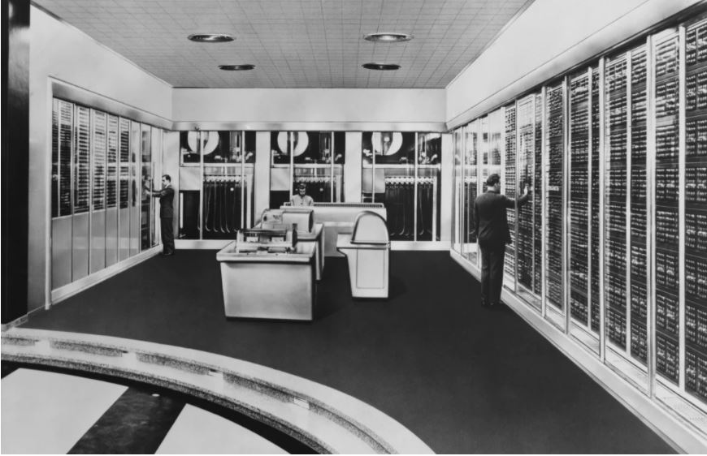

Contenido de la página de los personajes mas destacados de la computacion
Historia del almacenamineto
Hace unos cincuenta años, los tambores magnéticos no eran lo suficientemente buenos para un almacén de suministros de la Fuerza Aérea en Ohio (EE.UU.). Así que IBM inventó la unidad de disco duro. En realidad, no era una idea nueva, pero, hasta entonces no se consideraba necesaria. Las tarjetas perforadas y la cinta magnética podían almacenar una cantidad ilimitada de datos, aunque el acceso a cualquier objeto específico resultaba lento. Los dispositivos de tambor magnético, que almacenaban bits de información en la superficie de un tambor magnético rotatorio, podían almacenar entre 2KB y 8KB de datos y permitían un acceso aleatorio rápido, luego... ¿quién necesitaba más?...
La Fuerza Aérea de Estados Unidos, exactamente. En 1953, un depósito de suministros de la Fuerza Aérea en Ohio deseaba tener acceso instantáneo a 50.000 registros de inventario, es decir, mucho más de lo que podían contener los tambores, y mucho más rápidamente de lo que podía hacerse con la cinta magnética. De este modo, un equipo de ingenieros de IBM, en San José, California, se empleó el año siguiente en diseñar un dispositivo de 5MB con una pila de 50 discos de 2 pies de diámetro girando a 3.600 revoluciones por minuto y utilizando aire comprimido para impedir que la cabeza de lectura/escritura se estrellara contra la superficie de disco.
El 10 de Febrero de 1954, los ingenieros grabaron y leyeron a continuación las primeras palabras grabadas con éxito en una unidad de disco duro: “Este ha sido un día de sólido progreso”. Y fue así como surgió la base en la que se sustenta el moderno almacenamiento en masa. El dispositivo RAMAC 305 de IBM dio a esta compañía una ventaja inicial en lo que Big Blue llamó DASD (Direct Access Storage Device). Sin embargo, para 1962, otros proveedores estaban fabricando sistemas de disco duro para mainframes, y la capacidad de los discos había aumentado a 28MB. Estas unidades hicieron que resultase práctico el proceso de transacciones online (OLTP), ya que las empresas podían acceder ahora a grandes cantidades de datos de inventario y de clientes en tiempo real en lugar de utilizar el proceso por lotes o batch. No obstante, al aumentar el volumen de los datos online, la gestión del almacenamiento de datos se convirtió en un problema importante. La capacidad de las unidades de discos seguía siendo limitada, por lo que aún se utilizaban en gran medida tarjetas perforadas y cinta magnética de media pulgada para realizar el backup de datos de transacciones online. Para comienzos de los años 70, los programas de utilidad de backup y restauración de disco a cinta formaban una parte estándar de los sistemas operativos mainframe.
En 1973, los laboratorios de IBM en San José realizaron otro avance decisivo: el disco Winchester Modelo 3340, un disco duro sellado herméticamente con cabezas de lectura/escritura de peso ligero que funcionaban a 18 micro-pulgadas sobre la superficie del disco, en comparación con las 800 micro-pulgadas del dispositivo RAMAC.
Una mayor capacidad, rendimiento más rápido y menores costes resultantes convirtieron a la tecnología Winchester en el nuevo estándar. Ya entonces se empezó a adoptar la tecnología Winchester y se conectaban los discos duros a ordenadores de escritorio utilizando una conexión paralela independiente del dispositivo llamada SASI (Shugart Associates Standard Interface). En 1982, SASI recibió el nuevo nombre de SCSI (Small Computer Systems Interface) y se convirtió en un estándar para conectar dispositivos de almacenamiento de datos a ordenadores de todos los tamaños.
Durante los años 80, los fabricantes de sistemas continuaron mejorando los programas de utilidad, para migrar los datos inactivos online a cinta magnética, consolidar el espacio de almacenamiento no utilizado y compactar los datos archivados. En 1988, investigadores de la Universidad de California en Berkeley, publicaron su descripción de “conjuntos redundantes de discos de bajo coste” o RAID (Redundant Arrays of Inexpensive Disks). Estos conjuntos de unidades de discos habían sido utilizados ya antes para sustituir a discos grandes y costosos, pero este equipo desarrolló una arquitectura completa que con el tiempo se convirtió en un estándar en el sector.
Los Nuevos “Jukeboxes”
RAID no fue el único cambio que tuvo lugar en el mundo tradicional del almacenamiento de datos en disco y cinta. Para finales de los años 80, habían llegado ya los discos ópticos de lectura única como los CD-ROMs. Éstos eran más lentos pero más duraderos que la cinta y era más fácil acceder a ellos utilizando sistemas tipo jukebox automatizados.
En los años 90, las demandas de espacio de almacenamiento aumentaron vertiginosamente, a causa de los almacenes de datos (data warehouses), el proceso analítico online (OLAP), las aplicaciones multimedia e Internet. Al mismo tiempo, mientras que la velocidad de las conexiones de almacenamiento de conexión directa tradicionales, como SCSI y Fibre Channel, habían aumentado hasta 100MB/s, las tasas de transferencia en red para Gigabit Ethernet eran incluso más rápidas.
En 1995, el fabricante de productos de almacenamiento EMC desarrolló el concepto de almacenamiento conectado en red o NAS (Network Attached Storage), en el que podía accederse a dispositivos de almacenamiento por cualquier ordenador en una red de alta velocidad.
Hoy, las Redes de Área de Almacenamiento o SAN pueden incluir conjuntos RAID que realizan su propio backup de sí mismas a cinta automáticamente; jukeboxes de discos ópticos rápidos automatizados y servidores de cartuchos de discos, todos ellos conectados por redes rápidas y controlados por software de gestión de almacenamiento.
Sistemas DAFS: más espacio de almacenamiento
Uno de los protocolos de almacenamiento en boga en la actualidad es el Sistema de Acceso Directo a Ficheros o DAFS (Direct Access File System). Bajo un sistema DAFS, los datos son transferidos directamente desde el almacenamiento de datos al cliente en forma de ficheros lógicos, en lugar de en bloques de almacenamiento físico. Así que DAFS mejora considerablemente el rendimiento, porque la petición y su cumplimiento pasan por alto el kernel del servidor y van directamente al sistema de ficheros.
Este protocolo reconoce la rapidez y fiabilidad de los protocolos Gigabit Ethernet e InfiniBand actuales, permite acceso directo remoto a memoria o RDMA (Remote Direct Memory Access) entre aplicaciones que funcionan en máquinas diferentes en un cluster o en una red LAN y está creado en torno a ficheros, no en torno a bloques.
Para comprender mejor DAFS, hay que analizar las diferencias entre las antes mencionadas SAN y NAS. La primera es una subred completa dedicada al almacenamiento de datos y está conectada a uno o más servidores.
Las conexiones a SAN se realizan a través de un protocolo de alta velocidad como Fibre Channel o iSCSI. A este tipo de almacenamiento puede accederse desde todos los servidores, así que los usuarios pueden acceder a cualquier dispositivo de almacenamiento en la red SAN, cualquiera que sea el lugar en que esté localizado el almacenamiento o los usuarios. Las redes SAN han sido diseñadas para ayudar a gestionar y hacer más rápido el almacenamiento, simplificando la ruta de los datos y sacando servidores de conexión fija fuera del bucle. Sin embargo, transportan los datos.
Fuente: https://www.computerworld.es/archive/historia-del-almacenamiento
Linea del tiempo evolucion del almacenamieto

El almacenamiento informático no es un tema nuevo, sino que data desde el siglo pasado. Actualmente se puede utilizar un dispositivo USB para guardar toda la información requerida, sin importar el uso de dicha información, origen o destino de la misma.
En este sentido, la historia de estas herramientas de almacenamientos, comienza en los años 50 con las tarjetas perforadas, mismas que revolucionaron la forma de guardar información con su sistema de perforaciones que representaban los 0 y los espacios sin perforar que representaban los 1, también conocido como el Código Binario.
Fuente: https://www.merca20.com/los-dispositivos-de-almacenamiento-a-traves-del-tiempo/
evolucion de los ordenadores

El dispositivo de cálculo más antiguo (y más conocido) fue el ábaco, inventado en Mesopotamia en el año 2500 a.C. Es una calculadora manual que ayuda a sumar y restar números altos, además de “almacenar” el estado actual de la cuenta, similar al de los discos duros actuales. El ábaco se inventó cuando el tamaño de la sociedad se hizo demasiado grande para que una persona sola pudiera organizar y actualizar los datos – cuando hay miles de personas en una aldea o decenas de miles de cabezas de ganado para contar, sólo con el apoyo visual de un ábaco fue posible mantener la organización.
Durante los siguientes 4.000 años, los humanos han desarrollado todo tipo de dispositivos informáticos, como el astrolabio, que permitía a los barcos calcular su latitud en el mar, o los relojes para calcular el amanecer, las mareas o las posiciones de los cuerpos celestes. Sin embargo, ninguno de estos objetos era un ordenador; el primer uso documentado de la palabra “ordenador” es de 1613, en un libro de Richard Braithwait, donde el término no se aplicaba a una máquina, sino a una profesión. Hasta 1800, cuando el termino comenzó a referirse a dispositivos, un ordenador era una persona que hacía cálculos.
Sin embargo, a finales del siglo XIX, los dispositivos informáticos ya se utilizaban para tareas específicas en el mundo de la ciencia y la ingeniería, pero rara vez se utilizaban en la vida empresarial, gubernamental o doméstica.
Hasta principios de la década de 1970, los componentes informáticos eran demasiado caros para ser realmente útiles y accesibles a un consumidor individual. Sin embargo, todo cambió con el Altair 8800 en 1975, que se convirtió en el primer ordenador personal de éxito comercial.
En los años siguientes, el mundo vio el nacimiento de Microsoft y Apple, cuyos ordenadores creados por el consumidor resultaron en un gran éxito, pero fue el IBM PC, lanzado en 1981, el que finalmente revolucionaría la industria debido a su arquitectura “abierta”.
Fuente: https://www.worten.es/blog/1917/toda-la-historia-sobre-la-evolucion-de-la-tecnologia/